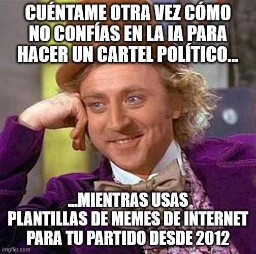

estrategIA #80 ·
La confianza selectiva en las imágenes
El contexto
El número probaba las nuevas funciones de ChatGPT para crear imágenes de campaña. Willy Wonka se dirige con ironía a quien rechaza esos carteles por estar hechos con IA, aunque lleva años comunicando con memes tomados de internet.
Publicado en: estrategIA #80 - La imaginación es el límite:exploramos las posibilidades del nuevo modelo de generación de imágenes de ChatGPT para la política y el gobierno
Leer el texto de la imagen
CUÉNTAME OTRA VEZ CÓMO NO CONFÍAS EN LA IA PARA HACER UN CARTEL POLÍTICO... MIENTRAS USAS PLANTILLAS DE MEMES DE INTERNET PARA TU PARTIDO DESDE 2012
Marca de la herramienta visible en el original: imgflip.com.